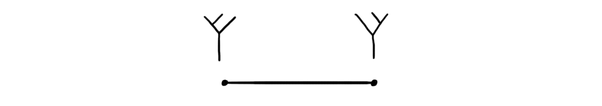
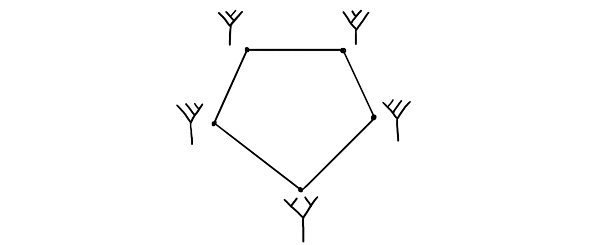
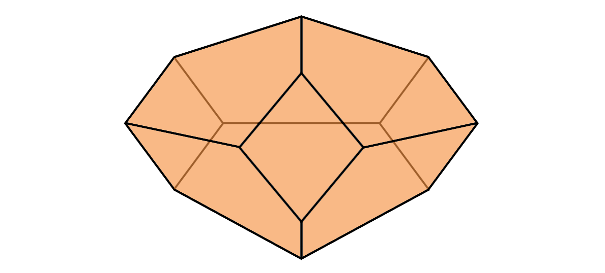

Imagine we have a system of two topological spaces $f:T\longrightarrow G$. We are often interested in knowing if a certain property on the space $G$ can be transferred through f such that we have the same property on $T$. If f is a nice enough morphism an example could be a topological invariant of $G$, for example its Euler characteristic. In this post we are more interested in transferring other things than invariants, more specifically structures. If $G$ has an algebraic structure, for example a group structure, can we then transfer the same or some other similar structure onto $T$ through $f$?
Isomorphic transfer
Let’s assume for now that $G$ is a group and that $f$ is an isomorphism. This allows us to also make $T$ into a group by transferring the group structure through $f$. We get this by defining the multiplication on $T$ to be $t_1\cdot t_2 = f^{-1}(f(t_1)\cdot f(t_2))$. Let’s prove that this is a group structure on $T$.
Since $f$ is an isomorphism, we have a unique element that gets sent to the identity element in $G$, which we define to be the identity element of $T$, i.e. $1_T = f^{-1}(1_G)$. This is in fact an identity element since
\begin{aligned}
t\cdot 1_T &= f^{-1}(f(t)\cdot f(1_T)) \\
&= f^{-1}(f(t)\cdot f(f^{-1}(1_G))) \\
&= f^{-1}(f(t)\cdot 1_G) \\
&= f^{-1}(f(t)) \\
&= t .
\end{aligned}
The same holds for $1_T\cdot t = t$. We define the inverse of an element to be $t^{-1} = f^{-1}((f(t)^{-1})$. Which we see is an inverse because
\begin{aligned}
t\cdot t^{-1} &= f^{-1}(f(t)\cdot f(t^{-1})) \\
&= f^{-1}(f(t)\cdot f(f^{-1}((f(t))^{-1}))) \\
&= f^{-1}(f(t)\cdot (f(t))^{-1}) \\
&= f^{-1}(1_G) \\
&= 1_T,
\end{aligned}
where the same also holds for $t^{-1}\cdot t = 1_T$. The operation is associative because
\begin{aligned}
t_1\cdot (t_2\cdot t_3)
&= t_1\cdot (f^{-1}(f(t_2)\cdot f(t_3)))\\
&= f^{-1}(f(t_1)\cdot f(f^{-1}(f(t_2)\cdot f(t_3)))) \\
&= f^{-1}(f(t_1)\cdot (f(t_2)\cdot f(t_3))) \\
&= f^{-1}((f(t_1)\cdot f(t_2))\cdot f(t_3)) \\
&= f^{-1}(f(f^{-1}(f(t_1)\cdot f(t_2)))\cdot f(t_3)) \\
&= (f^{-1}(f(t_1)\cdot f(t_2))\cdot t_3 \\
&= (t_1\cdot t_2)\cdot t_3
\end{aligned}
where the equality between the third and the fourth line comes from the associativity of the product in $G$.
Hence we have a binary operation on $T$ which is associative, has an identity element and has all inverses, which makes $T$ into a group.
Homotopy equivalent transfer
A crucial part in the above proof is that $f$ is an isomorphism, so what happens when this is not the case? We need some sort of way to pass from $G$ back to $T$ in order to have an algebraic structure on $T$, so we need a morphism that has a weaker type of inverse than an isomorphism. We do this by choosing $f$ be a homotopy equivalence. This means we have an homotopy inverse, i.e. a map $g: G\longrightarrow T$ such that $f\circ g \sim id_G$ and $g\circ f \sim id_T$. In this situation, what happens to the same kind of transferred structure on $T$? We do the same thing as last time and define our operation to be given by $m_2(t_1, t_2)=t_1\cdot t_2 = g(f(t_1)\cdot f(t_2))$. Why we also denote it by $m_2$ will be clearer later. This is a map $T\times T\longrightarrow T$. One thing we can check is weather this map is associative. We have
\begin{aligned}
t_1\cdot (t_2 \cdot t_3)
&= t_1\cdot g(f(t_2)\cdot f(t_3)) \\
&= g(f(t_1)\cdot fg(f(t_2)\cdot f(t_3)))
\end{aligned}
and
\begin{aligned}
(t_1\cdot t_2) \cdot t_3
&= g(f(t_1)\cdot f(t_2)) \cdot t_3\\
&= g(fg(f(t_1)\cdot f(t_2))\cdot f(t_3))
\end{aligned}
which because $g\circ f \neq id_T$, are not equal in general. Luckily they are homotopic! So instead of actual associativity, we have associativity up to homotopy. Such a homotopy between them is a map $m_3:I\times T^3\longrightarrow T$, where $I$ is the unit interval. This means that the interval parameterizes a space of maps $T^3\longrightarrow T$ in such a way that on the edges of the interval we have the two ways of combining three elements by our operation $m_2$. Another way to say this is that the composition of $m_3$ with the boundary map $\partial$ is given by
$$m_2(id_T\times m_2) - m_2(m_2 \times id_T) - m_3(\partial \times id_T \times id_T + id_T\times \partial \times id_T + id_T\times id_T\times \partial ).$$
We can graphically visualize the parametrization by the following diagram:

Here the two trees at the two vertices visualize the different brackets we can put between the elements in order to get the two different operations using $m_2$. The line between them is the homotopy $m_3$.
Stasheff associahedra
The line we just constructed, i.e. the space that parametrizes operations $T^3\longrightarrow T$ is called the third Stasheff associahedra, which we denote by $K3$. A natural question to ask is if we can continue this process, i.e. to see if we have spaces that parametrize maps $T^4\longrightarrow T$ such that the different ways of combining four elements using $m_2$ lie on its boundary. Let’s investigate what this would mean. We have five ways of combining four elements by the operation $m_2$, namely $t_1 \cdot (t_2 \cdot (t_3 \cdot t_4))$, $t_1 \cdot ((t_2 \cdot t_3) \cdot t_4)$, $(t_1 \cdot t_2) \cdot (t_3 \cdot t_4)$, $(t_1 \cdot (t_2 \cdot t_3)) \cdot t_4$ and $((t_1 \cdot t_2) \cdot t_3) \cdot t_4$. All of these are homotopic to each other through repeatedly using the homotopy $m_3$ to reposition the brackets. Notice that we have two ways of getting from $t_1 \cdot (t_2 \cdot (t_3 \cdot t_4))$ to $((t_1 \cdot t_2) \cdot t_3) \cdot t_4$. By using diagrams to describe the rebracketing we can visualize them as follows.

Here the vertices are the different combinations of four elements using $m_2$, the edges are the rebracketings using $m_3$. The two paths we have is the two paths we can use to get from the leftmost vertex to the rightmost one. Can we say something about how these two ways are similar? Yes, they are homotopic! This means that we can fill in the pentagon by a homotopy. We call this filled in pentagon the fourth Stasheff associahedron, denoted $K4$. This means that we now have a space that parametrizes a collection of maps $T^4\longrightarrow T$ in such a way that it respects the $m_3$ on the boundary, i.e. a map $m_4: K4\times T^4\longrightarrow T$.
If we look back we can also define $K2$ to be just a point, as it parametrizes the one multiplication operation we chose at the beginning. Trivially we can define $K1$ to be the empty set. We can also continue this process further than $K4$, and every time these Stasheff associahedra get more complicated. We wont explain all the details of all paths and combinations, but $K5$ looks like this:

Every vertex correspond to one way we can combine 5 elements, every edge to homotopies between them, every surface corresponds to homotopies between paths of homotopies, and lastly the inside to a homotopy between paths of the surfaces. These shapes get more and more complicated, and grow in dimension, so visualizing $Kn$ for $n\geq 6$ is difficult. You can see this page for an interactive 3D model of $Kn$ for $0\leq n\leq 10$. Be wary that $K10$ might really push your computer. What matters is that for every $n$ we get a map $m_n:Kn\times T^n\longrightarrow T$, that acts as a homotopy between different ways of combining $m_{n-1}$.
As we see in the drawings earlier we have that $K4$ is built up by five copies of $K3$, and we see that $K5$ is built up by five copies of $K4$ and three copies of $K3\times K3$. There is a formula for knowing how many of which Stasheff associohedra that build up a higher associahedron. The formula for finding how many copies of copies of $Kr\times Ks$ there is in $Kn$ is given as follows. For each $r, s$ such that $r+s=n+1$ there are $r$ copies of $Kr\times Ks$ in $Kn$. For $n=4$ we get (as $K1$ is the empty set) two copies of $K2\times K3$ and three copies of $K3\times K2$. Since $K2$ is just a point we get five copies of $K3$, which is what we see in the picture given earlier of $K4$. There are ways to explicitly describe the attaching maps, and there is even a way to construct $Kn$ as a particular convex hull in $\mathbb{R}^{n-2}$, but we won’t cover these here.
So why should we care about these? It is in general nice to have objects that classify certain operations on other objects, as much of modern mathematics is described in terms of operations on objects. These objects that parametrize operations are called operads, and in particular the set ${Kn}_ {n\geq 1}$ we just constructed to parametrize operations $T^n\longrightarrow T$ for topological spaces is called the Stasheff operad. A topological space with the action of the Stasheff operad is called an $A_\infty$-space. We will come back to talking about operads and $A_\infty$-structures in a future blog post, because they are really interesting! But for now we have done what we set out to do, i.e. understand a bit better what happens when we try to transfer a group structure through a homotopy equivalence, so let’s call it a day!